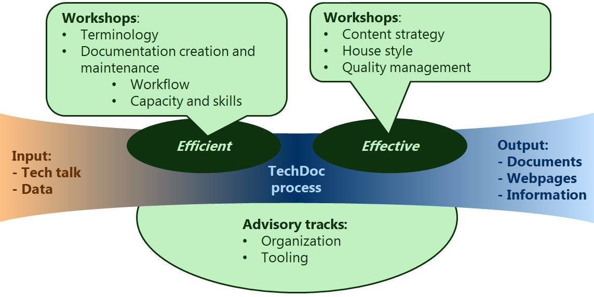

Creating effective documentation in an efficient manner requires the right skills and the right environment.
With a selection of workshops and advisory tracks, an optimum solution can be arranged to match skills, environment and requirements.
|
Workshop |
Content |
|---|---|
|
Content strategy |
Define content elements, content structure, distribution and document types needed for your customers. How the information is created, from which sources, the publication timing and means is part of a sustainable strategy. |
|
House style |
Establish the relevant elements of language, style, standardization of terminology next to the fonts and page design. The workshop hints on the processes to adhere to the house style. |
|
Quality management |
During the workshop the various aspects of quality such as correctness, readability and document management will be visited aiming to establish a quality management roadmap. |
| Terminology management |
During the workshop we will investigate which elements of terminology apply to your domain and how you can manage your terminology. |
|
Document creation and maintenance |
The workflow for document creation, information gathering and assembly, revising and managing the documentation projects will be discussed aiming to establish (or simplify!) a workflow and the skillsets required in each part. |
|
Advisory track |
Content |
|---|---|
|
Organization for documentation and product information |
During an organization advisory track all elements of the technical documentation creation processes will be reviewed, including the needs for the specific workshops. |
|
Technology and tooling |
During a tooling advisory track all contributing content and source delivery systems will be reviewed and how the contribution is optimized. |